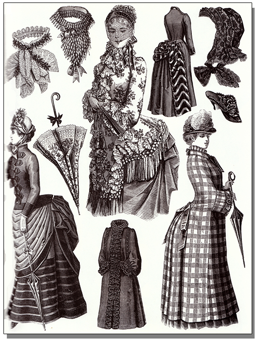
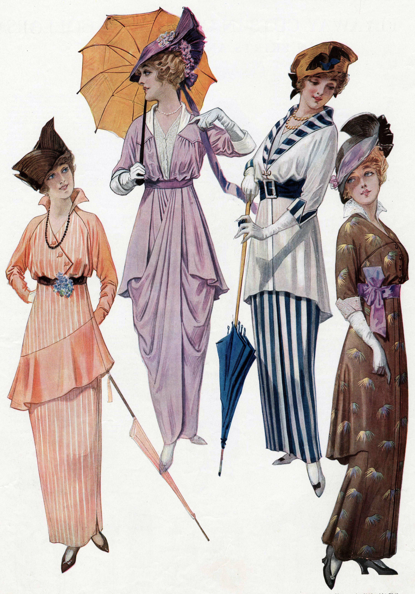
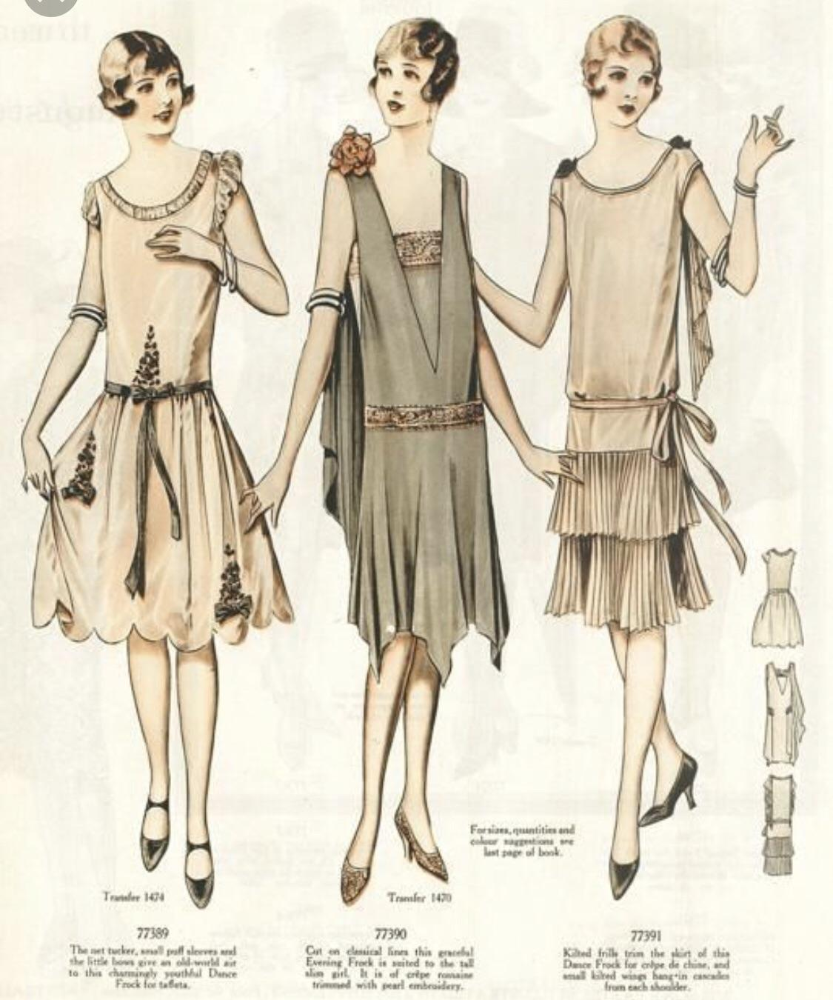
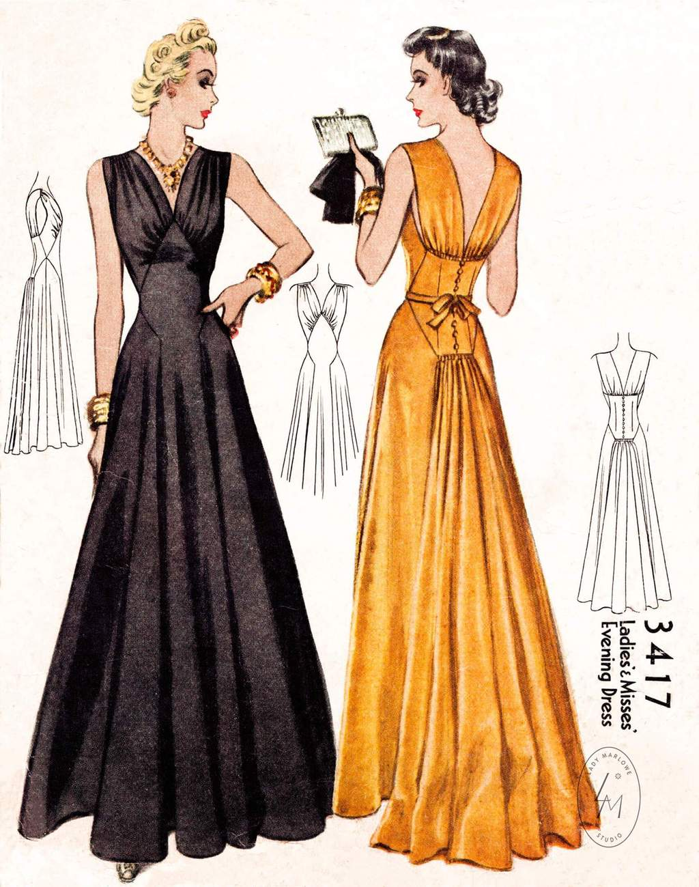

History of Fashion from 1900 to 1930
The S-bend corset was fashionable during the 1900s. It thrust the hips backwards and forced the chest forward into a fashionable pouter-pigeon shape, emphasised with puffed, frilly blouses that were often embellished with decorations like lace collars and broad ribbon ties. Separates were popular, with skirts fitted over the hip and fluted towards the hem. Hair was worn in a centre parting, often looped around pads and false hair to create a wide 'brim' of hair around the hairline. This hairstyle was worn under vast, broad-brim hats with low crowns, and adorned all over with flowers, lace, ribbons and feathers.
During this decade, frilly, puffed blouses and fluted skirts continued to be popular. A slightly high waistline was fashionable, as was a long tunic-like top worn over an ankle length A-line or 'hobble' skirt (cinched in at the hem).The World War I (1914–1918) World War 1 started in 1914 and ended in 1918. The war had a great effect on fashion as people were forced to adopt austere measures to cut costs. Elaborate styles of dressing had to give way to more practical dresses. Monochromatic and darker colors were used for clothes. Social activities had to be curtailed and hence the dressing for the parties was less.
This period between the two world wars is known as the golden era of French fashion. At the very beginning of the1920s it was fashionable for women to wear high-waisted, rather barrel-shaped outfits, and tunic-style tops were popular. However, between 1920-2 the waistline dropped to hip level, obscuring natural curves for a tubular, androgynous look. Young, very fashionable 'flappers' wore their hems at knee level, with neutral coloured stockings and colourful garters. Hemlines drifted between ankle and mid-calf for the duration of the decade. Jewellery was prominent, including large brooches and long strings of pearls. Hair was worn bobbed, sometimes close to the head, and the distinctive cloche hat (a close fitting, bell-shaped hat) was very popular.
The drop-waist androgyny of the previous decade gave way to a slinky femininity in the 1930s. Parisian couturiers introduced the bias-cut into their designs, which caused the fabric to skim over the body's curves. Long, simple and clinging evening gowns, made of satin were popular. Often the dresses had low scooping backs. During the day, wool suits with shoulder pads, and fluted knee-length skirts were worn. Fox fur stoles and collars were popular, as were small hats embellished with decorative feather or floral details, worn at an angle. Hair was set short and close to the head, often with gentle 'finger waves' at the hairline. Sports and beach-wear influenced fashionable dress, and the sun-tan was coveted for the first time
